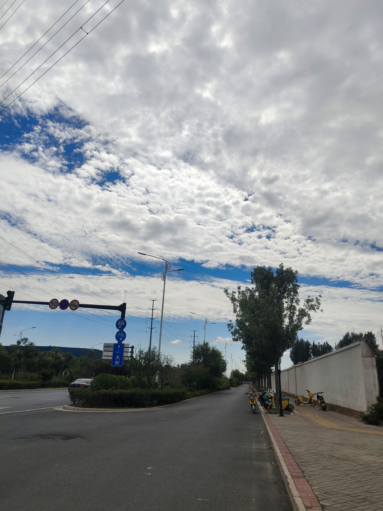

淋巴兄弟&&高
淋巴兄弟
大淋巴，小淋巴，我大学同学爱看，我之前就刷刷他们的短视频，直播最多看过两次，都是小黄那时候了。
我早知道他们乱，没想到这么乱，这么乱。
小杨哥里面的女主播，基本上都是一本的艺术学院毕业的，好像是七七吧，之前就是那个劈叉火的，之后嫁了一个美国男人，然后离婚了，（其实外国男的大多不喜欢中国女，非洲除外）然后就拜入杨哥门下，成为了一只鸡。
想想都可笑，兜兜转转一圈，还是个鸡的命。然后在卢的录音中，她就是随便睡的那种女人。原话是，你们在快手对着视频意淫的时候，她正在给我干活。
大淋巴，小淋巴其实背后的安徽太子爷，卢，外号职场小钢炮。
为什么这么说，因为凡是进公司的任何女主播，必须被卢验身。
这个女主播行不行，卢睡过之后就知道了。淋巴兄弟其实我一直不喜欢看，因为他俩就知道天天给那耍疯，吐舌头，特别疯狂，一种癫狂的状态。然后喜欢跳鸭子舞。
最可惜的是大杨嫂，本身就是豪门小姐，名校毕业，颜值极高，最后也是卢的玩物（这个是最讽刺的）。
小杨嫂也可惜（两人本身也是大学同学），因为小杨嫂一直支持他们直播创业，最后被沫沫插手，不过沫沫还是贪心，以为他们会给钱让她消停，结果人家做局录音给她送进去了。
淋巴兄弟之前拍娱乐视频很搞笑，我经常看，尤其是我大学同学经常聊起他，我慢慢也看了，现在看看，淋巴兄弟真是愚蠢。
这无疑是对这个世界莫大的讽刺，名校毕业也是鸡，有钱还得当个鸡。
最近俺村又少个人
这个人跟俺家关系还不错，姓高，我小时候跟他一块聊过，感觉很面熟，他没有工作，经常在楼下玩，我小时候最喜欢在楼下玩了，所以对他很面熟，经常看见他在楼下打牌。
然后跟俺奶关系不错，也认识我大娘，俺奶说他没有亲戚，孤儿，也没有后代，纯纯孤家寡人，但是有一个义女，他的身世孤独。
说实话我一直以为他有钱，因为他经常吸烟，给人一种很豁达潇洒的感觉。活了七十多岁结束了。今天吃席，感觉逝者的子女并不难受，我和他们吃饭的时候做一块，没有看出来难受，原因不明，不过不难受是对的，我本拍了一张照片吃饭的图片，但是回去看发现没有了，我最近在网上看抖音对开封的评价，一个红灯绿灯都能走的城市，可能开封人非常随意和不在乎吧，毕竟开封也算是皇城，放在古代皇城根的老百姓都是皇室的宗亲，这里面的老人非常喜欢捡垃圾，喜欢在垃圾中淘宝，包括上次去上海，也一样有人捡垃圾。
我今天感冒好了，我感冒一般三天自愈，但是还是没有完全好。
感冒痊愈给人一种脱胎换骨的感觉，感觉又活了一遍。
吃席的菜
席上的菜吃了很多遍，都是那个味道，从小时候一直吃到现在，婚丧都是那几家酒店，那几家酒店也就那几道菜，不过今天有一个炸鱼，那个炸鱼可以，把骨头都炸酥了，可以直接吞咽，外边裹一个面包糠，金黄酥脆，吃起来有一种新鲜感。
可能是我感冒了，之前那个人人抢着吃的大虾，现在吃起来，一般般，我想起了小时候的事情，大虾都抢着吃，一轮下来，就没有了。
酒席（其实发生于9.25）的菜，吃了很多遍，我们小区都是那两个酒店，一个立洋，一个稻香居，我们小区很小，很多都是熟人，算是一个职工小区，里面很多人从小都互相认识，最近去世的人越来越多了，再看看这个小区，给人一种物是人非的感觉，给人一种此地空余黄鹤楼的感觉。今天的菜，感觉还好。最近可能出了什么政策，小区的冬青都砍了，他们生命力很强，很少有死亡的。四季的叶子不带落的，一直长青，感觉还不错。下面放几张那几天刮风的照片，云彩很好看，感觉一种国泰民安的感觉，一种舒畅的感觉,风刮着云跑，很有意思。


点击发送评论
点击查看评论